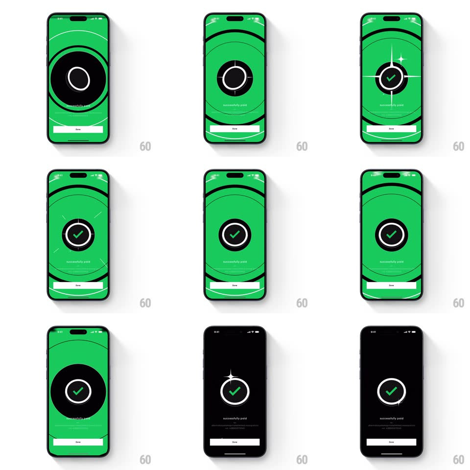

Media
Frame-by-frame

Rebuild this interaction 1:1: CRED's payment success animation - a green ring expands from a dot to flood the black screen, concentric target rings ripple outward, a sparkle flash fires, and a checkmark draws itself inside the center ring over "successfully paid", before the green recedes back to black.

Rebuild this interaction 1:1: CRED's payment success animation - a green ring expands from a dot to flood the black screen, concentric target rings ripple outward, a sparkle flash fires, and a checkmark draws itself inside the center ring over "successfully paid", before the green recedes back to black. ## Integration Integration: stack-agnostic spec - springs given as stiffness/damping, timed motions as duration + curve; map every value to your framework and animation library of choice. ## Scene Full-screen takeover: black -> flood green -> black, with concentric ring outlines, a white center ring containing the checkmark, "successfully paid" caption, and a white Done button pinned at the bottom. ## Motion spec Pattern: radial flood with target ripple and drawn checkmark. - A green dot at center expands into a solid disc (400ms, ease-out), then floods the whole screen green (300ms). - Concentric dark rings ripple outward from center (~4 rings, staggered 80ms, expanding past the screen edges, 600ms). - A four-point sparkle flashes at the center (scale 0 -> 1 -> 0, 350ms). - The white center ring draws on (stroke, 300ms) and the checkmark strokes itself in (path draw, 350ms, ease-out). - "successfully paid" and Done fade in (250ms). - Exit: the green contracts back to black from the edges (500ms), leaving the ring + check on black. ## Calibration - Exactly two colors: CRED green and black, plus white for the ring/check. - The ripple rings are dark-on-green outlines, not filled bands. ## Reduced motion Crossfade black -> green result state (250ms); checkmark fades in complete. ## Don't miss - The checkmark draws after the ripple - the sequence is dot, flood, ripple, sparkle, draw. - The exit recede is part of the animation, not a separate transition.